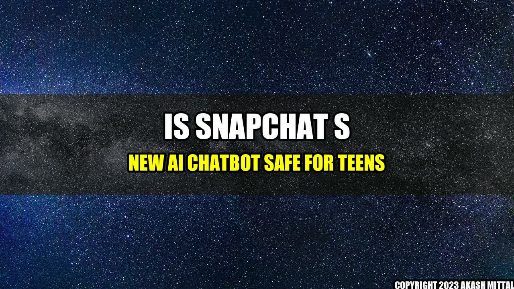

Is Snapchat's New AI Chatbot Safe for Teens?
When 16-year-old Lily got a message from a new friend on Snapchat, she was excited to chat with someone new. But as the conversation went on, Lily started to feel uneasy. The person on the other end seemed to know a lot about her, and kept asking personal questions. When Lily asked for a name, the response was "I'm Snap, your AI chatbot friend."
Lily is not alone in her experience. Recently, Snapchat launched a new feature that allows users to chat with an AI-powered chatbot, which can answer questions and offer advice. While the feature has been marketed as a fun and engaging way for users to interact with the platform, many parents and teens are concerned about the safety implications.
Concrete Examples of Concerns About Snapchat's Chatbot
- Some worry that the chatbot may be programmed to ask personal questions or collect data that could be used for targeted advertising.
- Others are concerned that young users may not be able to differentiate between the chatbot and real people, and may share sensitive information with a bot.
- There are also concerns about the potential for cyberbullying through the chatbot, as well as the possibility that the AI system could be hacked by malicious actors.
Is the AI Chatbot Safe for Teens?
- Snapchat has stated that it is committed to user safety and privacy, and that the chatbot does not collect personal information beyond what is necessary to provide the service.
- Parents and guardians can take steps to monitor their children's use of Snapchat and other social media platforms, and can educate them about online safety and security.
- Ultimately, it is up to individual users to consider the risks and benefits of using the chatbot, and to make informed decisions about how they use social media.
References and Further Readings
- Snapchat's New AI Chatbot is Already Raising Alarms Among Teens and Parents
- Snapchat Rolls Out AI Chatbot to Everyone in the US and Several Other Countries
- Snapchat: What Parents Need to Know
Hashtags and Article Category
- Hashtags: #snapchat #chatbot #teens #safety #AI
- Article Category: Technology
Akash Mittal Tech Article
Share on Twitter Share on LinkedIn